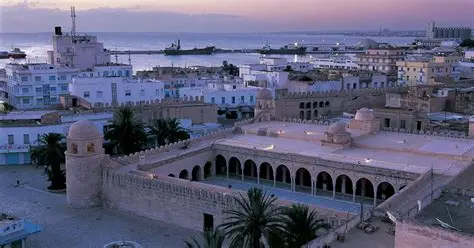

Médina de Sousse
Classée au patrimoine mondial de l'UNESCO, la médina de Sousse est un exemple remarquable d'architecture militaire et religieuse islamique. Fondée au IXe siècle, elle conserve ses remparts, ses souks authentiques et son tissu urbain médiéval intact.